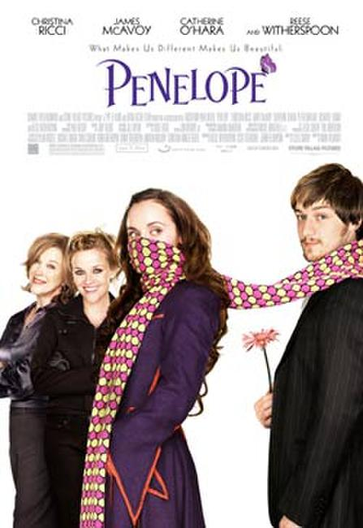
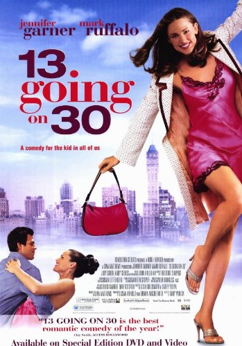
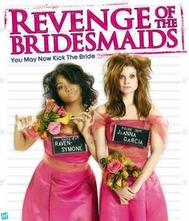

Penelope

Platform: Amazon Prime, Netflix, YouTube Red
Rotten Tomatoes Score: 53%
Rating: PG
Watch the trailer here
Actors: Richard E. Grant, Catherine O’Hara, Nick Prideaux, Michael Feast
Synopsis:Penelope is a movie about a girl, whom is cursed with the nose of a pig.
She is so beautiful, but her nose is in the way. She tries to live a normal life like any girl her
age, but her nose prohibits this from going smoothly. Penelope gets treated so bad that she no
longer wants to live because of the emotional pain she has to endure on a daily basis.
The only way the curse can be broken is by Penelope meeting a man who accepts her and her nose.
Penelope has interviews with man after man but all of them turn her down because of her nose situation.
Soon enough, the right one comes along, but her family hates him. Now, Penelope must make risky
decisions to step out into the world and break all of the rules. She searches for the truth, and
finds it in the worst way possible.
13 going on 30

Platform: Amazon Prime, Netflix, YouTube Red
Rotten Tomatoes Score: 64%
Rating: PG-13
Watch the trailer here
Actors: Jennifer Garner, Mark Ruffalo, Judy Greer, Andy Serkis
Synopsis:A girl who's sick of the social strictures of junior
high is transformed into a grownup overnight. In this feel-good fairy tale,
teenager Jenna (Christa B. Allen) wants a boyfriend, and when she's unable
to find one, she fantasizes about being a well-adjusted adult. Suddenly,
her secret desire becomes a reality, and she is transformed into a
30-year-old (Jennifer Garner). But adulthood, with its own set of
male-female challenges, isn't as easy as it looks.
Revenge of the Bridesmaids

Platform: Amazon Prime, Hulu
Rotten Tomatoes Score: 65%
Rating: TV-14
Watch the trailer here
Actors: Raven-Symone, JoAnna Garcia, Beth Broderick
Synopsis:The movie follows Abigail and Parker as they return
to the Town they grew up in. They find out their friend Rachel is going to be
in the wedding of Caitlin who is another childhood friend. She was chosen to
be a bridesmaid. They manipulate Caitlin into allowing them to join her
wedding party. Rachel has plans to sabotage the wedding. Caitlin is
marrying her ex boyfriend. The ladies plan to stop the wedding so Rachel
can get her ex love back.